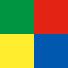

Kontakt
Klassisch oder via social network.
Entweder einfach per Telephon/Mail oder über mein bevorzugtes "social network" google plus. Aber auch twitter mit seinen 140 Zeichen können schon für ein "Hallo" reichen. Und wen meine "bunte Seite" interessiert, kann ja auch mal meine andere Website besuchen, die mir als "Versuchskaninchen" für Webexperimente dient.
079 413 17 13
philipp@jauss.name
